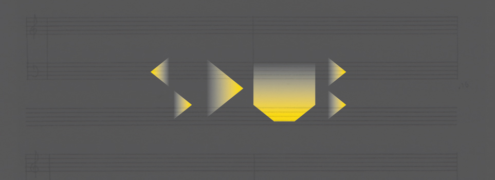
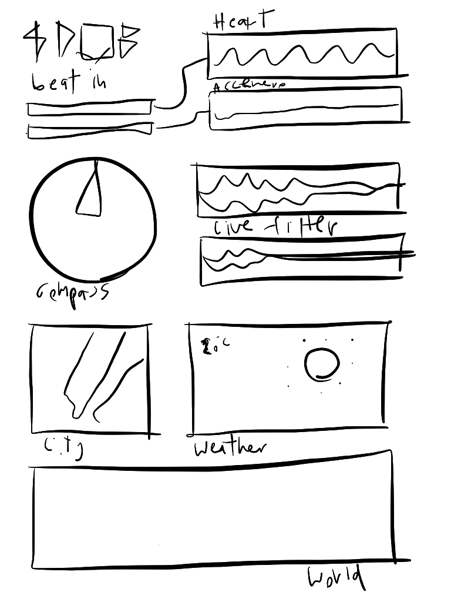

<div class="row">


	<div class="fr-work-text col-xs-12 col-md-4 col-md-push-8">
		<h3>{{page.title}}</h3>
		<h5>{{page.year}}</h5>
		<h6>{{page.tags}}</h6>
		{% if page.collab %}
		<h6> in collaboration with {{page.collab}}</h6>
		{% endif %}
		  
		<p>
			Sdub is an app that allows user to listen, translate and compose the sound from live data inputs. Ranging from basic data from the device such as compass, GPS, movement tracking through accelerometer data to more expanded data around the user such as weather, and other avaiable APIs. The app extracts these data feed characteristic and allow user to map it to sonic qualities of the music that the user is listening. These create more awareness to the context around the user while also differentiate the music you listen by take in contextual input to make each play through different from another. 
		</p>
		<p>
			The project is written in OpenFrameworks (C++) for iOS.
		</p>

	</div>


	<div class="fr-work-img col-xs-12 col-md-8 col-md-pull-4">  

		
		<div class="flex-video widescreen">
			<iframe width="560" height="315" src="//www.youtube.com/embed/dh5mg_-n9A4" frameborder="0" allowfullscreen></iframe>
		</div>
		
		
	</div>


</div>
{% include worktile.html %}